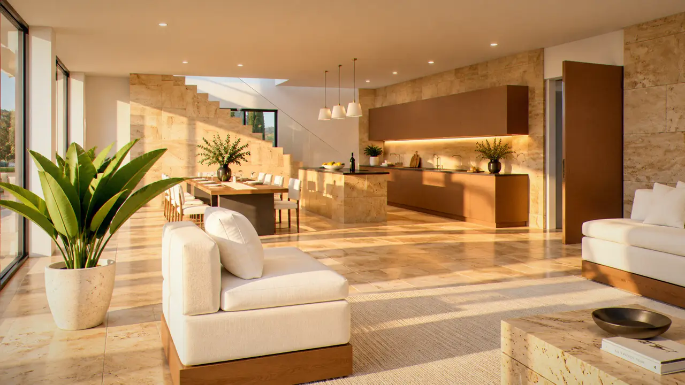
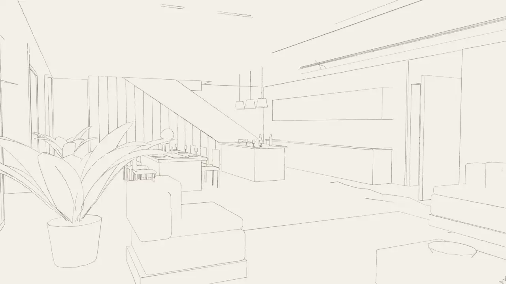
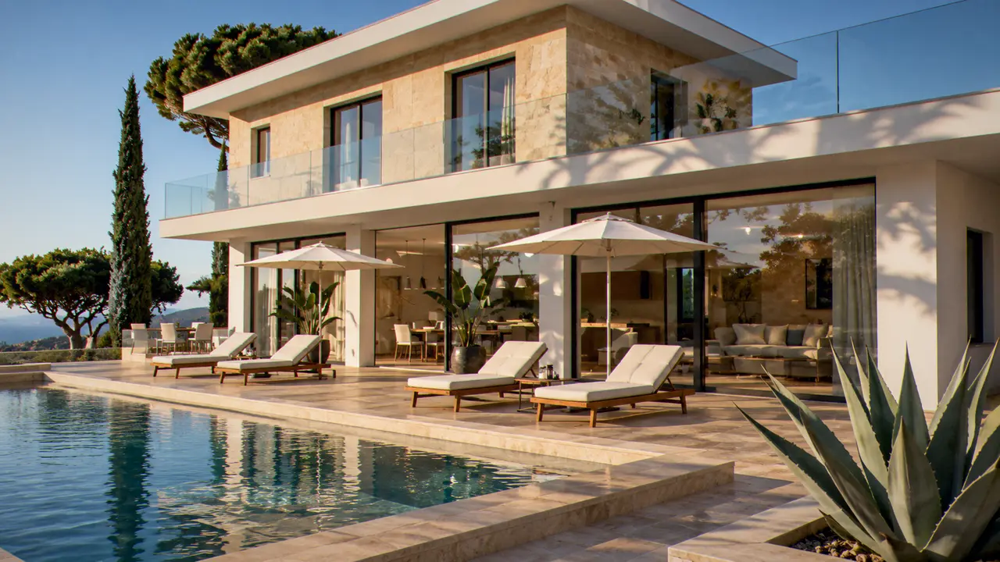
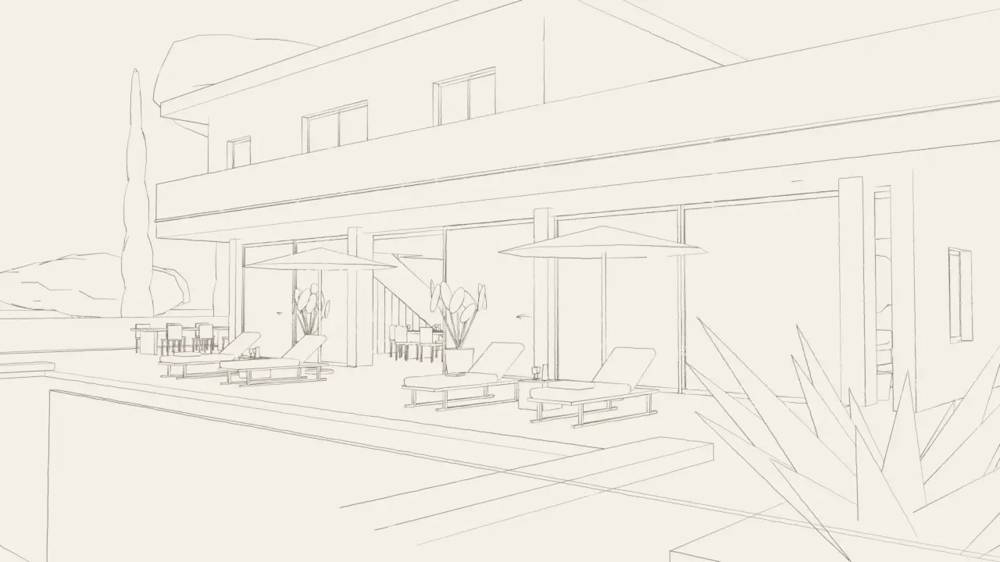

Compris dans le séjour
- ConciergerieUne personne joignable de huit heures à minuit, qui connaît la maison et le golfe.
- Ménage quotidienChaque matin pendant que vous êtes à la plage, linge de maison et serviettes de bain changés tous les deux jours.
- Petit-déjeuner livréPain et viennoiseries du village, fruits du marché, déposés à la porte avant huit heures.
- Bassin et jardinEntretenus deux fois par semaine, en dehors de vos heures.
- Wi-Fi, télévision, climatisationFibre dans toute la maison, climatisation discrète dans les chambres.


À la demande
- Chef à la maisonUn dîner ou toute la semaine, menu établi avec vous la veille.dès 90 € par personne
- La caveUne sélection de vins de Provence et de grands crus, composée par un caviste de Saint-Tropez selon vos goûts, en place à votre arrivée.sur devis
- Bateau et skipperUne journée au large, les calanques du cap Lardier, les îles d'Or, mouillage à Pampelonne.dès 1 800 € la journée
- TransfertsAéroports de Nice et de Toulon-Hyères, gare de Saint-Raphaël, héliport de Grimaud.sur devis
- Bien-êtreMassages sur la terrasse, cours de yoga au lever du soleil.dès 120 €
- Garde d'enfantsDes personnes de confiance, en journée ou en soirée.25 € de l'heure


Ce que la maison ne fait pas
Pas de fêtes, pas d'événements. La villa se loue à la semaine, du samedi au samedi, pour quatre personnes au plus. Les animaux ne sont pas admis, à cause de la garrigue et de la falaise. On ne fume pas à l'intérieur.
Ces règles tiennent la maison telle que vous la trouverez.